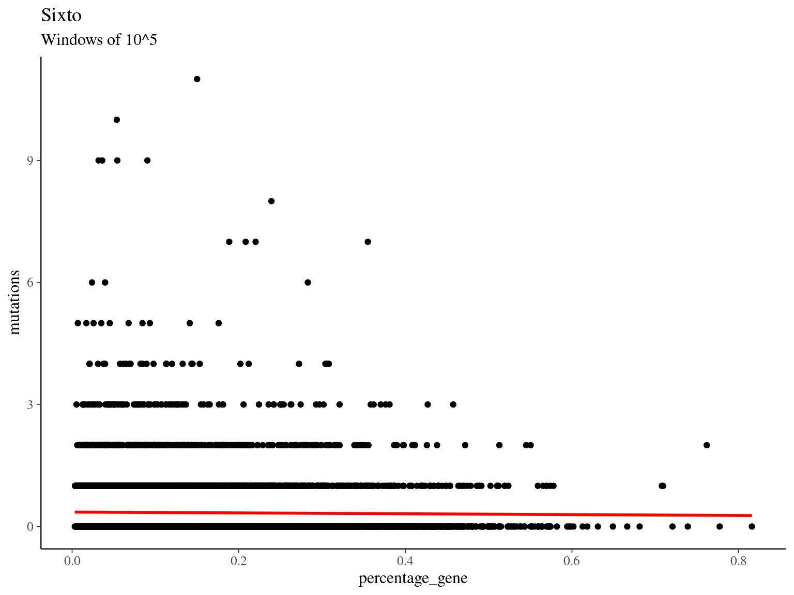
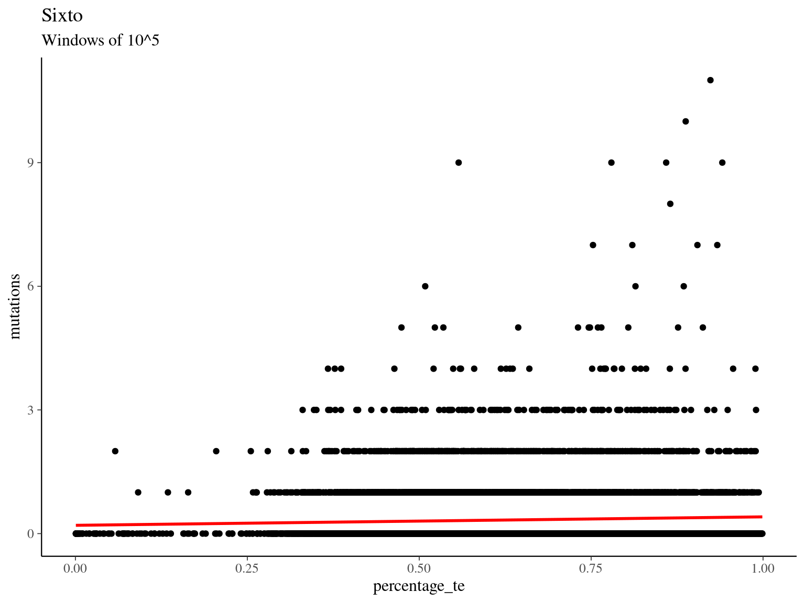
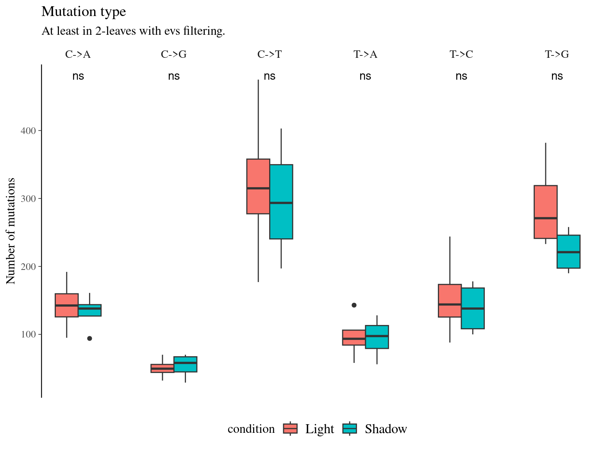
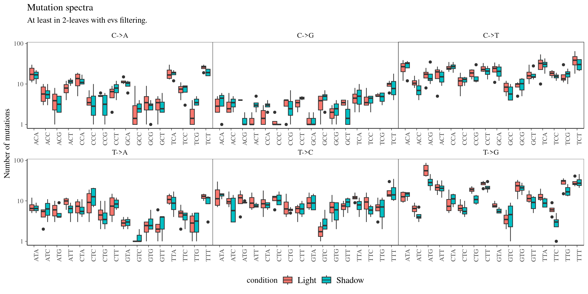
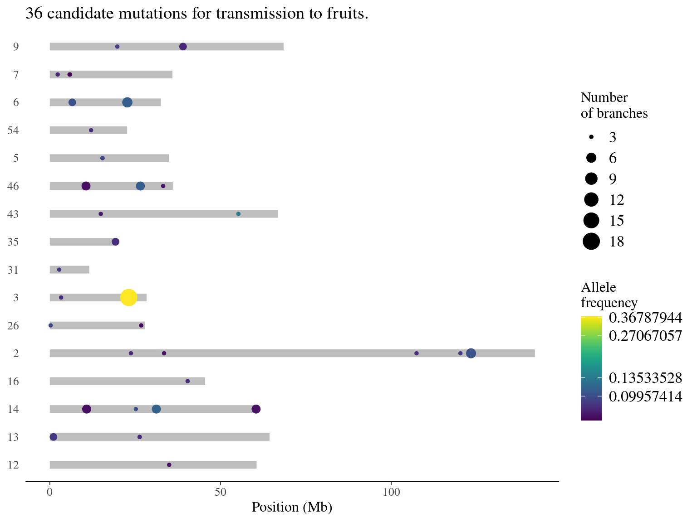

Chapter 11 Mutations Sixto
This chapter describes the analyses of Sixto mutations currently done in the the sixto branch of the detectMutations repository.
11.1 Quality check
The results of multiQC are available for the haplotypes HS1 here. They globally all gave a green light for subsequent analyses.
11.2 Genome
Figure 11.1: Quality assesment of Sixto’s genome. A. Anchored scaffolds size-distribution for anchored haplotypes HS1 in Sixto’s genome. B. BUSCO results for haplotypes HS1 and HS2.
Figure 11.2: Coverage distribution. Distribution of the number of locations in the reference genome with a given depth of coverage.
Figure 11.3: Genome coverage and GC-content on a 10-kb windows for the HS1 haplotype (all anchored scaffolds).
11.2.3 Comp

##
## Call:
## glm(formula = mutations ~ percentage_gene, family = "poisson",
## data = all)
##
## Coefficients:
## Estimate Std. Error z value Pr(>|z|)
## (Intercept) -1.03310 0.03008 -34.341 <2e-16 ***
## percentage_gene -0.31327 0.17572 -1.783 0.0746 .
## ---
## Signif. codes: 0 '***' 0.001 '**' 0.01 '*' 0.05 '.' 0.1 ' ' 1
##
## (Dispersion parameter for poisson family taken to be 1)
##
## Null deviance: 8665.7 on 8236 degrees of freedom
## Residual deviance: 8662.5 on 8235 degrees of freedom
## AIC: 13107
##
## Number of Fisher Scoring iterations: 6
##
## Call:
## glm(formula = mutations ~ percentage_te, family = "poisson",
## data = all)
##
## Coefficients:
## Estimate Std. Error z value Pr(>|z|)
## (Intercept) -1.50617 0.06899 -21.832 < 2e-16 ***
## percentage_te 0.62403 0.10430 5.983 2.19e-09 ***
## ---
## Signif. codes: 0 '***' 0.001 '**' 0.01 '*' 0.05 '.' 0.1 ' ' 1
##
## (Dispersion parameter for poisson family taken to be 1)
##
## Null deviance: 10017.9 on 9724 degrees of freedom
## Residual deviance: 9982.1 on 9723 degrees of freedom
## AIC: 15066
##
## Number of Fisher Scoring iterations: 611.3 Rubrynolide enzymes
On https://img.jgi.doe.gov/cgi-bin/m/main.cgi
> Find gene
> dplyr::select All
> Add dplyr::selected to Gene Cart
> Uplad & Export
> FASTA Nucleic Acid format
> Show in export format
> Copy in rubrynolide.facd data/mutations/sixto/genome/
~/Tools/blatSrc/bin/blat HS1_Sru_omap1_hap1_HYBRID_SCAFFOLD.fa rubrynolide.fa rubrynolide_on_sixto_anchored.pslNo match!
11.4 Heterozygosity
We used k-mer analyses (21-mers) using jellyfish and the GenomeScope to estimate genetic diversity \(\pi=0.901%\) (Fig. 11.4).
We detected and filtered SNPs as follow:
- Raw: raw result from
GATK HaplotypeCaller + GenomicsDBImport + GenotypeGVCFs - Biallelic: biallelic sites with
bcftools - SNP SNPs with
GATK - Filtered: SNPs with QUAL < 30, QD < 2, FS > 60, SOR > 3 using
GATK - Non-missing: SNPs in all genotypes and individuals with
plink - Shared=8M : shared SNPs by at least 32 out of 33 individuals with
bcftools

Figure 11.4: GenomeScope Profile. Full results here: http://genomescope.org/analysis.php?code=Esy8w8C9yQa4rmw87o6y.
11.5 Mutations filters
We removed all candidate mutations present in the heterozygous sites and in the raw candidate mutations from the cambium.
We kept only mutations with no copy of the mutated allele in the normal sample (NAC, normal_altCount == 0).
We tested independently the effect of 4 filters and look their effect on (1) the percentage kept, (2) the distribution of allelic frequencies, and (3) the overlap between filters:
- MAC: a minimum of 5 copies of the mutated allele in the mutated sample (
mutation_altCount >= 5) - DP: a read depth for the two sample between the 5th quantile and the 95th quantile of the coverage of the corresponding library (
normal_DP <= high_cov, normal_DP >= low_cov, mutation_DP <= high_cov, mutation_DP >= low_cov) - BIO: the mutation is present in at least two biological replicates (2 leaves from the crown)
- EVS:
Strelka 2automatic filtering based on the empiric variant score (Filter == "PASS")
MAC and EVS are the most stringent filters (Fig. 10.7, and mostly MAC filter changes the allele frequencies distribution (Fig. 10.8. Most filters share mutations, except EVS and BIO that rejected individually a lot mutations shared by the two others (Fig. 10.9. And all filters except MAC are not sensitive to the library coverage (Fig. 10.10. We will thus use two filters for next steps:
- base:
- NAC: no copy of the mutated allele in the normal sample (
normal_altCountT1 == 0) - MAC: a minimum of 5 copies of the mutated allele in the mutated sample (
mutation_altCount >= 5) - DP: a read depth for the two sample between the 10th quantile and the 90th quantile of the coverage of the mutated library (
normal_DP <= high_cov, normal_DP >= low_cov, mutation_DP <= high_cov, mutation_DP >= low_cov) - BIO: the mutation is present in at least two biological replicates (2 leaves from the crown)
- NAC: no copy of the mutated allele in the normal sample (
- evs:
- base
- EVS:
Strelka 2automatic filtering based on the empiric variant score (Filter == "PASS")
Figure 11.5: Percentage of kept mutations per filter.

Figure 11.6: Alleles frequencies of filtered mutations.

Figure 11.7: Filtered mutations sharing across filters.
Figure 11.8: Link between the number of detected mutations and the coverage across samples depending on the filter used.
11.6 Leaf mutations
14 to 59 mutations passed evs filtering across samples (Fig. ??). Most of mutations are low frequency (Fig. 11.10). Most of mutations are not shared by biological replicates (Fig. 11.11 and Fig. 11.12).
Figure 11.9: Number of filtered mutations per leaf.
Figure 11.10: Alleles-frequencies of filtered mutations in leaf samples.
Figure 11.11: Filtered mutations sharing across leaf samples within tips for evs filtering.
Figure 11.12: Filtered mutations sharing across leaf samples within tips for base filtering.
11.9 Light & annotation
Figure 11.13: Number of mutations per filter and light condition across branches.


11.11 Mutations for Fruits
Selection of mutations for transmission in fruits.
| replicate | N | minAF | meanAF | maxAF |
|---|---|---|---|---|
| 18 | 1 | 0.37 | 0.37 | 0.37 |
| 6 | 3 | 0.10 | 0.11 | 0.11 |
| 5 | 5 | 0.07 | 0.09 | 0.11 |
| 4 | 4 | 0.08 | 0.09 | 0.10 |
| 3 | 23 | 0.07 | 0.09 | 0.13 |

11.12 Genes
cd data/mutations/sixto/annotation
~/Tools/gffread/gffread trsc.fa.transdecoder.gff3 -T -o trsc.fa.transdecoder.gtf
perl ~/Tools/SNPdat_package_v1.0.5/SNPdat_v1.0.5.pl \
-i SNPsOnTrsc.tsv \
-g trsc.fa.transdecoder.gtf \
-f trsc.fa \
-s synonymy.summary \
-o synonymy.outputFigure 11.14: Mutations types.
Figure 11.15: Mutation allelic fraction per type.
Figure 11.16: Synonymy with allelic fraction.
Figure 11.17: GO enrichment for Angela non-synonymous mutations.